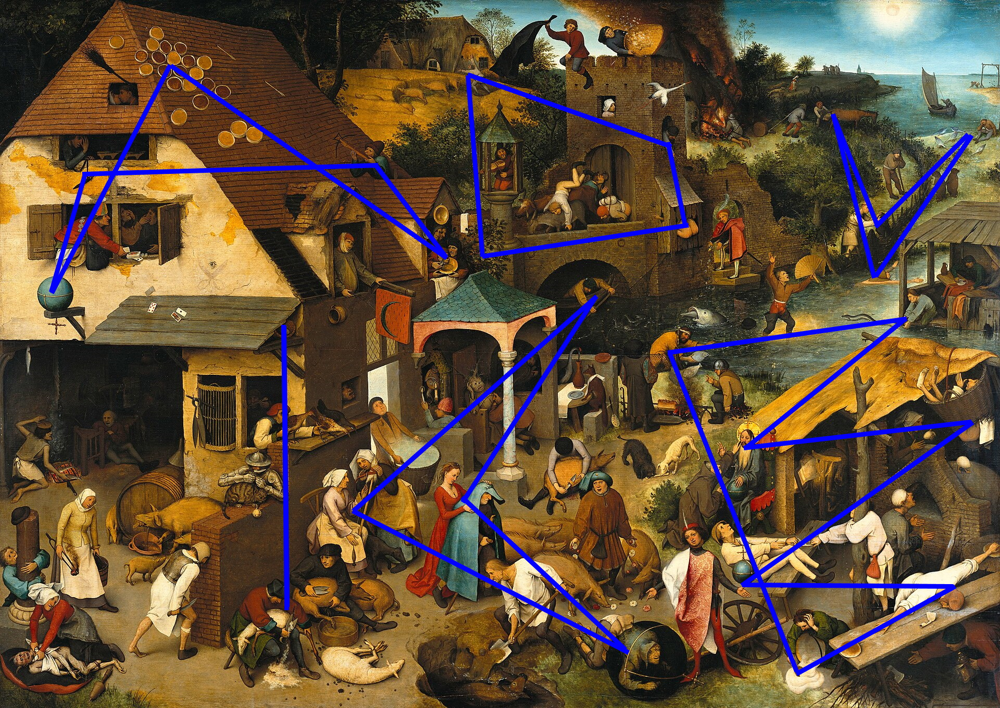

Solution: Folk Wisdom
Answer: WHISKEY BOTTLE
Written by Ella Sheffield and Adeline Wong
The solvers begin with a list of audio files, grouped, and a list of rebuses. The first thing that the solvers may feel inclined to do is to identify the songs and who sang them. Doing so results in the following list:
| Lyric | Song | Artist |
|---|---|---|
| And to those gods I will speak bluntly / We've an accord / If you ever touch or harm him / Please rest assured / That you might not fear a man / But to a woman by the end you'll kneel and plead | Inkpot Gods | The Amazing Devil |
| Once upon a time you dressed so fine / Threw the bums a dime in your prime, didn't you? | Like a Rolling Stone | Bob Dylan |
| You know we kept on missing / So try and try again | Live & Learn | Clannad |
| Lie to me if you will / At the top of Beringer Hill / Tell me anything you want, any old lie will do | Ragged Wood | Fleet Foxes |
| People talking without speaking / People hearing without listening / People writing songs that voices never shared | The Sound of Silence | Simon & Garfunkel |
| We were tight knit boys / Brothers in more than name / You would kill for me / And knew that I'd do the same | Always Gold | Radical Face |
| She can bake a cherry pie / Quick as a cat can wink his eye | Billy Boy | Nina & Frederick |
| And I can't keep it in, I can't hide it / and I can't lock it away | Can't Keep it In | Cat Stevens |
| You're a reckless driver / And one day it'll kill us if I don't let go | reckless driving | Lizzy McAlpine |
| For you'll need your wits about you when you run against the grain | Againt the Grain | The Irish Rovers |
| Meddling fools, meddling fools / Don't you meddle with me | Cooltide | John Martyn |
| Only know you love her when you let her go / and you let her go | Let Her Go | Passenger |
| It looks like we might sing all night, but looks are deceiving | Wonderful Friends | Pete Seeger |
| One lived in luxury and riches / And the other one begged for his bread | A Picture From Life's Other Side Lyrics | Woody Guthrie |
| I keep my tears in bottles / In case if I need them later / You never know / You never know | In Bottles | AURORA |
| The words I speak are wildfires and weeds / They spread like some awful damn disease | Allies or Enemies | The Crane Wives |
| But I was late for this, late for that, late for the love of my life | Cleopatra | The Lumineers |
| But you can’t go from fry cook to the Opry overnight / So stay up in that saddle, you may join the chosen few / But for now you’ll sweat it out and sing the food truck blues | Food Truck Blues | Arcadian Wild |
| I said to my wife, my pretty little wife, explain this thing to me / What's this head doing here on the pillow case where my head ought to be? | You Old Fool | The Weavers |
| And I believe in grace and choice / And I know perhaps my heart is farce | Babel | Mumford & Sons |
| One cannot undo the past | If I Had Wings | Dolly Parton |
| You can't hide your lyin' eyes / And your smile is a thin disguise / I thought by now you'd realize / There ain't no way to hide your lyin' eyes | Lyin' Eyes | The Eagles |
| But times were hard, and though I tried / the money wasn't there | The Last Saskatchewan Pirate | The Arrogant Worms |
| I know dark clouds will hover on me / I know my path is rough and steep | Wayfaring Stranger | The Longest Johns |
| I come from wealth and beauty / Untouched by work or duty | We Both Go Down Together | The Decemberists |
| Oh, I stole from my father all I thought I could sell | Wishing Well | The Oh Hellos |
The rebuses are less immediately intuitive. Understanding what to do with these requires two key observations. The first is that the flavor text indicaes that there is "extra imagery" in the puzzle - this may indicate to solvers that there are some images in the rebuses that won't be immediately useful. Armed with this knowledge, they can then begin to realize that each rebus has a set of images that corresponds to one of the singers of the songs in the audio files, with some number of extra images. The phrase "count on" in the flavor text indicates that the number of extra images is relevant.
At this stage, the solvers now have some lists of strings associated with numbers. There's nothing to do but index! The song titles have not yet been used, so it is natural to attempt to index into them. The rebus order appears arbitrary, so using this as the extraction ordering makes sense.
| Rebus Answer | Parse | # of Extra Images | Song Title |
|---|---|---|---|
| John Martyn | [Lyndon B] Johnson - son, Mars - S[ulfur] + tin | 1 | COOLTIDE |
| The Oh Hellos | O, hell + multiple Os | 4 | WISHING WELL |
| Radical Face | Face emoji beneath a radical (nth root) symbol | 1 | ALWAYS GOLD |
| Dolly Parton | Doll + E, part + on | 1 | IF I HAD WINGS |
| The Amazing Devil | A + maze + ingot - ot, devil | 2 | INKPOT GODS |
| Nina & Frederick | "ni" (from Monty Python and the Holy Grail) + Na (sodium), &, free - e + Derek (from the Good Place) | 3 | BILLY BOY |
| The Eagles | Multiple eagles | 2 | LYIN' EYES |
| Lizzy McAlpine | Liz (from the Magic Schoolbus) + E, "Mc" (McDonalds menu) + mountains (alpine) | 1 | RECKLESS DRIVING |
| Bob Dylan | Bob (the haircut), dill + N | 2 | LIKE A ROLLING STONE |
| The Lumineers | Loom "in" (between) two ears | 1 | CLEOPATRA |
| Cat Stevens | Cat, St (street) + evens (even numbers) | 4 | CAN'T KEEP IT IN |
| Pete Seeger | Pets + E (east), eager beaver - beaver | 2 | WONDERFUL FRIENDS |
| AURORA | "Oar or A" | 3 | IN BOTTLES |
| Arcadian Wild | Arcade + Ian [McKellan], Y+old | 6 | FOOD TRUCK BLUES |
| The Weavers | Multiple people weaving | 3 | YOU OLD FOOL |
| The Arrogant Worms | Arrow + G + ant, multiple worms | 3 | THE LAST SASKATCHEWAN PIRATE |
| The Irish Rovers | Multiple Mars rovers carrying Irish flags | 2 | AGAINST THE GRAIN |
| Simon & Garfunkel | SI (units) + moon - O, Garf (first half of Garfield) + uncle | 3 | THE SOUND OF SILENCE |
| The Crane Wives | Multiple brides standing beside cranes | 2 | ALLIES OR ENEMIES |
| Woody Guthrie | Wood + E, gut + three | 2 | A PICTURE FROM LIFE'S OTHER SIDE LYRICS |
| Fleet Foxes | Foxes on a fleet of ships | 1 | RAGGED WOOD |
| The Decemberists | Decides - ides + ember + multiple wrists | 4 | WE BOTH GO DOWN TOGETHER |
| Clannad | Cl (chlorine) + anna + d (diameter) | 3 | LIVE & LEARN |
| Passenger | Passenger in a car | 2 | LET HER GO |
| The Longest Johns | Four characters named John - two have been stretched, two squished, with the stretched ones indicated | 6 | WAYFARING STRANGER |
| Mumford & Sons | Mum + fjord - j, &, multiple suns | 3 | BABEL |
The resulting cluephrase from this step is CHAIN LYRIC TO BRUEGEL PROVERB. Googling the phrase "bruegel proverb" gives the painting Netherlandish Proverbs, with a handy Wikipedia page that contains a lot of nicely sorted data. (Sharp-eyed solvers will also connect the capitalization of "Elders" in the flavor text to "Peter Bruegel the Elder.) At this point, the extra images in each rebus start to make sense. Each of them can map to a proverb from the painting, resulting in an association between songs and proverbs.
In order to form a chain, solvers should realize that they need a second association for each proverb/lyric pair. At this point they may realize that the meanings of the songs line up with the meanings of the proverbs, and that they can associate them that way. The groupings of the lyrics indicate a self-contained chain (which can be easily discovered from the associations between the pair In Bottles and A Picture From Life's Other Side). This will result in a set of chains that looks like this:
| Proverb 1 (Rebus) | Proverb 1 Meaning | Artist | Song title | Song lyric | Proverb 2 Meaning | Proverb 2 (Song, for chaining) |
|---|---|---|---|---|---|---|
| The world is turned upside down | Everything is the opposite of what it should be | Bob Dylan | Like a Rolling Stone | Once upon a time you dressed so fine / Threw the bums a dime in your prime, didn't you? | To be very wealthy | To have the roof tiled with tarts |
| To have the roof tiled with tarts | To be very wealthy | Fleet Foxes | Ragged Wood | Lie to me if you will / At the top of Beringer Hill / Tell me anything you want, any old lie will do
| To trick somebody | To shave the fool without lather |
| To shave the fool without lather | To trick somebody | Clannad | Live & Learn | You know we kept on missing / So try and try again | To repeat a foolish action | To shoot a second bolt to find the first |
| To shoot a second bolt to find the first | To repeat a foolish action | The Amazing Devil | Inkpot Gods | And to those gods I will speak bluntly / We've an accord / If you ever touch or harm him / Please rest
assured / That you might not fear a man / But to a woman by the end you'll kneel and plead
| To issue a challenge | There hangs the knife |
| There hangs the knife | To issue a challenge | Simon & Garfunkel | The Sound of Silence | People talking without speaking / People hearing without listening / People writing songs that voices
never shared
| Everything is the opposite of what it should be | The world is turned upside down |
| It grows out of the window | It cannot be concealed | Lizzy McAlpine | reckless driving | You're a reckless driver / And one day it'll kill us if I don't let go | Disaster ensues from carelessness | When the gate is open the pigs will run into the corn |
| When the gate is open the pigs will run into the corn | Disaster ensues from carelessness | Nina & Frederick | Billy Boy | She can bake a cherry pie / Quick as a cat can wink his eye | To be efficient | To try to kill two flies with one stroke |
| To try to kill two flies with one stroke | To be efficient | Radical Face | Always Gold | We were tight knit boys / Brothers in more than name / You would kill for me / And knew that I'd do the
same
| They are inseparable comrades | They both crap through the same hole |
| They both crap through the same hole | They are inseparable comrades | Cat Stevens | Can't Keep it In | And I can't keep it in, I can't hide it / and I can't lock it away | It cannot be concealed | It grows out of the window |
| Horse droppings are not figs | Do not be fooled by appearances | The Irish Rovers | Againt the Grain | For you'll need your wits about you when you run against the grain | It is difficult to oppose the general opinion | It is ill to swim against the current |
| It is ill to swim against the current | It is difficult to oppose the general opinion | John Martyn | Cooltide | Meddling fools, meddling fools / Don't you meddle with me | Do not interfere in matters that are not your concern | If I am not meant to be their keeper, I will let geese be geese |
| If I am not meant to be their keeper, I will let geese be geese | Do not interfere in matters that are not your concern | Passenger | Let Her Go | Only know you love her when you let her go / and you let her go | To discard something without knowing whether it will be required later | To throw one's cowl over the fence |
| To throw one's cowl over the fence | To discard something without knowing whether it will be required later | Pete Seeger | Wonderful Friends | It looks like we might sing all night, but looks are deceiving | Do not be fooled by appearances | Horse droppings are not figs |
| Leave at least one egg in the nest | Always have something in reserve | Woody Guthrie | A Picture From Life's Other Side Lyrics | One lived in luxury and riches / And the other one begged for his bread | One has all the advantages, the other none | One shears sheep, the other shears pigs |
| One shears sheep, the other shears pigs | One has all the advantages, the other none | AURORA | In Bottles | I keep my tears in bottles / In case if I need them later / You never know / You never know | Always have something in reserve | Leave at least one egg in the nest |
| To fish behind the net | To miss an opportunity | The Crane Wives | Allies or Enemies | The words I speak are wildfires and weeds / They spread like some awful damn disease | Both spread gossip | One winds on the distaff what the other spins |
| One winds on the distaff what the other spins | The words I speak are wildfires and weeds/They spread like some awful damn disease | Arcadian Wild | Food Truck Blues | But you can’t go from fry cook to the Opry overnight / So stay up in that saddle, you may join the
chosen few / But for now you’ll sweat it out and sing the food truck blues
| To succeed one must be willing to make sacrifices | To have to stoop to get on in the world |
| To have to stoop to get on in the world | To succeed one must be willing to make sacrifices | The Weavers | You Old Fool | I said to my wife, my pretty little wife, explain this thing to me / What's this head doing here on the
pillow case where my head ought to be?
| She deceives him (she cheats on him) | She puts the blue cloak on her husband |
| She puts the blue cloak on her husband | She deceives him (she cheats on him) | The Lumineers | Cleopatra | But I was late for this, late for that, late for the love of my life | To miss an opportunity | To fish behind the net |
| To hold an eel by the tail | To undertake a difficult task | The Oh Hellos | Wishing Well | Oh, I stole from my father all I thought I could sell | To profit from the work of others | To catch fish without a net |
| To catch fish without a net | To profit from the work of others | Dolly Parton | If I Had Wings | One cannot undo the past | Once something is done it cannot be undone | He who has spilt his porridge cannot scrape it all up again |
| He who has spilt his porridge cannot scrape it all up again | Once something is done it cannot be undone | The Arrogant Worms | The Last Saskatchewan Pirate | But times were hard, and though I tried / the money wasn't there | To have difficulty living within budget | To be barely able to reach from one loaf to another |
| To be barely able to reach from one loaf to another | To have difficulty living within budget | The Decemberists | We Both Go Down Together | I come from wealth and beauty / Untouched by work or duty | To have every advantage | To have the world spinning on one's thumb |
| To have the world spinning on one's thumb | To have every advantage | The Eagles | Lyin' Eyes | You can't hide your lyin' eyes / And your smile is a thin disguise / I thought by now you'd realize /
There ain't no way to hide your lyin' eyes
| To have your deception uncovered | To fall through the basket |
| To fall through the basket | To have your deception uncovered | Mumford & Sons | Babel | And I believe in grace and choice / And I know perhaps my heart is farce | To hide deceit under a veneer of Christian piety | To tie a flaxen beard to the face of Christ |
| To tie a flaxen beard to the face of Christ | To hide deceit under a veneer of Christian piety | The Longest Johns | Wayfaring Stranger | I know dark clouds will hover on me / I know my path is rough and steep | To undertake a difficult task | To hold an eel by the tail |
The solvers have now nearly finished this massive puzzle! All that they need to do now is extract. The solvers have chaining associations, and the one piece of information from the painting that they haven't used is the position of the proverb on the painting. The last thing to do is to draw the chaining connections onto the painting itself. Doing so will get an image that looks like this:

These shapes can be read as letters: ADVICE. They can call it in!
Hahahaha, they thought they were done. Nope, it's action submission. Once they submit an image of themselves interpreting a proverb literally, they can get their actual answer: WHISKEY BOTTLE.
Author’s Notes
Ella: This puzzle, as you may be able to guess, was born from a dataset. I mean come on, no puzzler can open the Netherlandsih Proverbs wikipedia page and not immediately see the puzzle potential. The question then simply became what to do with this dataset. My ideas went through a lot of iterations before settling into the monstrosity you see today - let's just say that I've spent more time staring at this painting than would perhaps be considered "reasonable" or "sane".
When I was constructing this puzzle, there were concerns among the writing team that no one would want to solve such a long puzzle, particularly one with such a heavy audio component. The original version of this puzzle had 36 song/proverb pairs, rather than the unfortunately red-herringy 26 that we pared it down to, and arguments were made that this was simply too much to expect anyone to sift through. My response to this was, largely invariably, "let the solvers suffer", and I stand by this sentiment.
The question on your mind at this point is probably "but how did you even go about finding 36 26 folk songs with lyrics that corresponded to the meanings of antiquated Dutch proverbs?" The answer is many, many hours spent on azlyrics.com, collectively losing our minds. If anyone has a tool that can sort songs by meaning, please send it our way, because we were manually sifting through entire artist discographies. Huge credit has to go to my coauthor Addie, who agreed to join me on this fool's errand after seeing the madness that was my partially filled out construction spreadsheet - however deranged that I may seem now, know that I would have been much worse without her working tirelessly with me. I also want to thank Olga, who isn't listed as an author on this puzzle but who provided invaluable help in going through our lyric connections and flagging all the ones that were a little too dubious to work outside of our own heads. There's a lot of risk with a puzzle mechanic as subjective as this one, and testsolving feedback was the only way that we got it to work as well as it does.
Of course, what helped with constructing this puzzle is the fact that Addie and I are both big fans of folk music in general. We were definitely doing some finagling of the data to try and fit in our favorite bands. Out of the musical groups in this puzzle, I can highly recommend the following: The Oh Hellos (particularly their 4 Winds album cycle), the Arcadian Wild, Simon & Garfunkel, The Crane Wives, The Amazing Devil, AURORA, Fleet Foxes, The Lumineers, and Mumford and Sons. I will also shout out Of Monsters and Men as a favorite band that I was unfortunately unable to fit into this puzzle.
At the end of the day, I am honestly astonished that we managed to get this puzzle working. There were many points at which I thought we were going to need to throw the whole thing out and start from scratch, but somehow it pulled through - and of that I'm very pleased. Possibly no one else will be quite as tickled by the combination of the datasets as I was, but I hope there are at least a few solvers that come away from this puzzle with a new appreciation for folk music, Peter Bruegel the Elder, or both.
Adeline: Despite what Ella seems to suggest, it required basically zero effort to convince to me join up—I saw the puzzle title in our master planning sheet, went, "Oh, a folk song puzzle?", and immediately offered myself for whatever help might be needed.
I was immediately sold on the core puzzle mechanic (the linking of song lyrics to proverb meanings), but as it turns out, this kind of thing is hard to make unambiguous in a puzzle context. Something Ella didn't mention is that our early drafts involved solvers finding the groupings themselves (the songs were presented as an alpha-ordered list of 36)—and while I and my terminal literary-analysis-brain agreed this should be possible, it turns out such fickle things as meanings are "subjective" and "open to the listener's interpretation". Who would have thought?
In terms of folk artists that I recommend, I have pretty much the same list as Ella: I came into this puzzle knowing (and loving) The Amazing Devil, The Oh Hellos, The Arcadian Wild, and The Crane Wives, and The Longest Johns; I came out with basically half the artists on our final list. I did try for ages to fit "Puff, the Magic Dragon" (by Peter, Paul, and Mary) into the puzzle, but was unfortunately stymied by the lack of relevant proverbs in good locations. Nevertheless, I recommend them too.